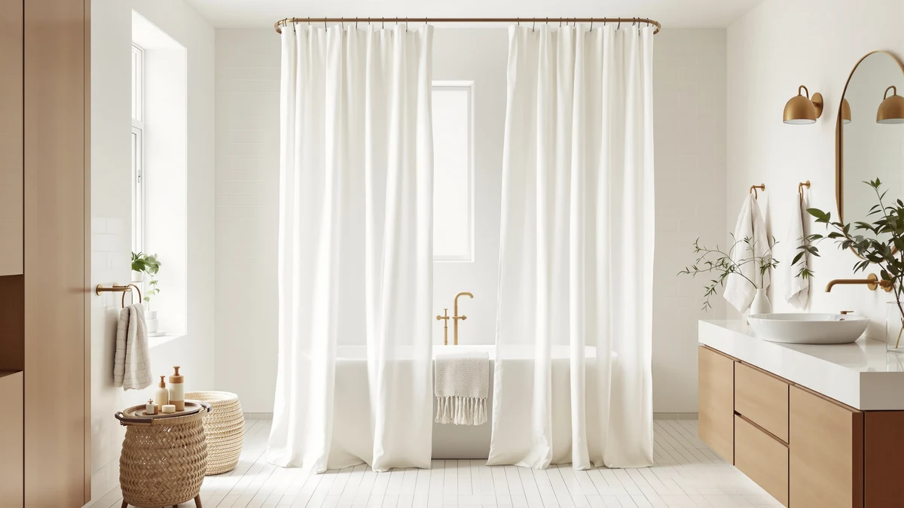

Best Shower Curtains for Gardens (2026)
Prices and picks verified as of September 2026. Independent, reader-supported reviews.


Quick Answer
We compared seven of the best shower curtains for gardens on Amazon for color, material, price, and verified owner reviews. The Amazon Basics Bathroom Shower Curtain wins for most bathrooms: a neutral design that lets your greenery and garden-toned decor do the work, a water-resistant polyester and PEVA blend, and a 4.6-star rating across 45,448 reviews at $9.38.
Our pick: Amazon Basics Bathroom Shower Curtain, $9.38 Check Price on Amazon
Bottom line: our top pick is the Amazon Basics Bathroom Shower Curtain at $8.99. The best budget option is the N&Y HOME Fabric Shower Curtain Liner Solid White with Magnets at $7.99.
Things to Know Before You Buy
- Color does more work than pattern. A solid sage green panel, like the Dynamene Sage Green Shower Curtain, reads as garden-inspired without needing a busy print, while a plain neutral curtain like the Amazon Basics pick leaves that job to your towels and bath mat.
- Standard size is 72 by 72 inches. Five of the seven picks in this guide use that footprint, one runs 72 by 84 inches for a taller stall, and one runs 70 by 72 inches. Measure your rod and stall before you order.
- PEVA and polyester blends handle humidity better than plain fabric. That matters if the bathroom sits next to a garden window or doubles as a shower in a pool house or garden room. See our PEVA liner picks for a dedicated waterproof layer.
- A liner lets you layer a decorative curtain over waterproofing. The Barossa Design Shower Curtain Liner in this guide is built to hang behind a printed or fabric curtain rather than stand alone.
- Price does not track rating closely. The cheapest pick here runs $7.99 and the priciest runs $22.99, but every pick holds at least a 4.5-star average, so the extra cost buys color or print, not durability.
The best shower curtains for gardens bring the color and calm of an outdoor space into a room that rarely sees any greenery at all, whether you are dressing a bathroom next to a garden view or fitting a shower in a garden room or pool house. A plain vinyl liner gets the job done, but it does nothing for a space built around potted ferns, a woven basket, or a window looking out on actual plants. A sage green panel or a botanical-leaning print pulls the room together instead of fighting it, and it costs about the same as the plain curtain you would have bought anyway.
We compared seven shower curtains for a garden-inspired bathroom across color, material, price, rating, and review count, pulling only from listings with real customer feedback rather than marketing copy. Materials split into two groups here: polyester and PEVA blends built to resist splashing on their own, and one dedicated PEVA liner meant to layer behind a decorative curtain. Prices run from $7.99 to $22.99, and every pick holds at least a 4.5-star average.
The Amazon Basics Bathroom Shower Curtain leads the group for most bathrooms, pairing a neutral design with a water-resistant blend and the largest review base of any pick here at 45,448 reviews. If you want an actual garden color like sage green, a liner to pair with a printed curtain, or a longer panel for a taller stall, we cover those alternatives below along with the honest drawbacks of each.
Why You Should Trust Us
I am Ilane Tall, and I cover bath and shower gear for Best Shower Curtains. For this guide to the best shower curtains for gardens, I focused on the details that decide whether a curtain actually reads as garden-inspired in a real bathroom: whether the color or print does the work on its own, how the price compares across similar options, and what verified buyers say once the curtain has been hanging for months.
We do not own or install every curtain we cover. Instead, we research listings closely, cross-check specs against the manufacturer's own description, and weigh customer ratings against review volume, since a 5-star average built on a handful of reviews tells you far less than a 4.5-star average built on tens of thousands. Every price, material, and rating in this guide comes from the current Amazon listing, and we flag it clearly when a pick has a thin review history.
How We Picked
We started with a wide list of candidates for the best shower curtains for gardens in solid greens, botanical prints, and neutral fabrics, then narrowed the field by rating, review count, and price spread. We excluded curtains rated under 4.0 stars and anything with a print too far from a garden or botanical feel, since a bright cartoon or corporate logo print does not fit the brief even if the specs check out.
We also wanted a real range of colors and roles rather than seven near-identical plain panels. That is why this guide includes a dedicated liner for layering behind a decorative curtain, a true sage green solid, a boho print, an extra-long option for a taller stall, and three neutral picks that differ mainly in price and review history. We weighed heavily how each listing's color and material claims held up against its price, since a curtain marketed as water-resistant for under $10 still needs a PEVA or polyester blend to back that claim up.
How We Compared
We compared each of the best shower curtains for gardens in this guide on the same set of facts: listed material, panel size, current price, star rating, and total review count, all pulled directly from the live Amazon listing rather than promotional copy. Where a listing described a color as sage or a print as boho, we checked that description against the product photos rather than taking the listing title at face value.
We also weighed review count against rating, because a strong average built on a small sample carries less weight than a slightly lower average from tens of thousands of verified buyers. Reviewers consistently note whether a curtain's color holds up under bathroom humidity, whether the fabric needs a separate liner, and how the size fits a standard rod, and we folded that owner feedback into the pros and cons below alongside the raw specs.
Our Picks

Amazon Basics Bathroom Shower Curtain
What we like
- 45,448 reviews back the 4.6-star average with a sample size none of the other picks come close to
- Plain, neutral design pairs with almost any garden-toned towel or bath mat
- At $9.38, it is the second-cheapest pick in this guide
Flaws but not dealbreakers
- No color or print of its own, so it does none of the garden-look work on its own
- Standard 72x72 size may leave a gap on a wider stall
| Material | Polyester / PEVA |
| Size | 72x72 |
The Amazon Basics Bathroom Shower Curtain earns the top spot among the best shower curtains for gardens by staying out of the way of everything else in the room. At $9.38, it is the second-cheapest pick here, and the review count sets it apart from every other option. With 45,448 verified reviews behind a 4.6-star average, the rating reflects a massive, consistent sample rather than a handful of early adopters.
The polyester and PEVA blend sheds water well enough that many owners hang it without a separate liner in a stall shower. Because the panel carries no pattern or color statement, it works as a neutral base for a bathroom that gets its garden feel from actual plants, woven baskets, or sage-toned towels instead of the curtain itself. The tradeoff is that it contributes nothing visually on its own, so a bathroom that wants the curtain itself to carry the garden theme should look at the sage green or boho picks below instead.

Barossa Design Shower Curtain Liner
What we like
- 91,634 reviews make it the single most reviewed product in this entire guide
- PEVA construction sheds water well enough to protect the floor on its own
- At $9.99, adding a liner barely changes the total cost of the setup
Flaws but not dealbreakers
- A liner alone will not give a bathroom any garden color or print
- Some owners note a mild plastic smell when it is new
| Material | Polyester / PEVA |
| Size | 72x72 |
The Barossa Design Shower Curtain Liner is not a garden print by itself, and it does not try to be. It is the practical layer that lets you hang a decorative, non-waterproof curtain, like a linen-look panel or a lighter fabric print, without soaking the floor behind it. At $9.99, it fits almost any budget, and with 91,634 reviews behind a 4.5-star average, it has the deepest track record of anything in this guide.
The PEVA construction sheds water on contact, and owners report that it hangs flat against the tub or stall wall instead of clinging to a shower curtain rod like a thin plastic liner does. If your main curtain is meant to carry the garden look, whether that is the Dynamene sage green solid or the AmazerBath boho print, this liner is the piece that protects the fabric and the floor behind it.

AmazerBath Boho Shower Curtain Modern
What we like
- Boho print brings the closest thing to a garden-inspired pattern in this guide
- Polyester and PEVA blend resists splashing better than a pure fabric curtain
- 4.6-star average holds up across 1,079 reviews
Flaws but not dealbreakers
- At $19.99, it costs roughly double the cheapest pick here
- Bolder pattern may clash with an already busy tile or wallpaper
| Material | Polyester / PEVA |
| Size | 72x72 |
The AmazerBath Boho Shower Curtain Modern is the pick to reach for if you want the curtain itself to carry a garden feel through pattern rather than a single solid color. The warm, textured print reads as intentional decor next to rattan shelving or a woven bath mat, and the polyester and PEVA blend means it holds up to splashing without a separate liner in most stall showers.
At $19.99, it sits at the higher end of the price range in this guide, but the 4.6-star average across 1,079 reviews shows the pattern and construction hold up under regular use. Owners report that the print keeps its color through repeated washing, and the standard 72 by 72 inch size fits a typical rod without alteration. The bolder graphic is the tradeoff, so it suits a bathroom that wants a clear focal point rather than a subtle, neutral backdrop.

Dynamene Sage Green Shower Curtain
What we like
- Sage green shade lines up with a garden color palette better than any other pick here
- 22,421 reviews back a 4.6-star average with a solid sample size
- Polyester and PEVA blend holds color well under regular washing, per owner reports
Flaws but not dealbreakers
- A single solid color, so it will not suit a bathroom that wants pattern or texture
- At $15.99, it costs more than the plain Amazon Basics or N&Y picks
| Material | Polyester / PEVA |
| Size | 72x72 |
If you want the shower curtain itself to look like part of a garden rather than a backdrop for one, the Dynamene Sage Green Shower Curtain is the closest color match in this guide. Sage sits right in the range of dried herbs, eucalyptus, and muted greenery, so it reads as garden-inspired even in a bathroom with no plants at all.
At $15.99, it costs more than the plain neutral picks here, but the 22,421 reviews behind its 4.6-star average show the color and construction hold up for a large group of buyers. Owners report that the shade stays consistent through washing rather than fading toward gray, and the standard 72 by 72 inch panel fits a typical rod. Because it is a single solid color, it works best in a bathroom that wants the garden feel to come from the curtain and not from a busy print.

N&Y HOME Fabric Shower Curtain
What we like
- 68,277 reviews put it among the most reviewed picks in this guide
- Woven fabric texture reads more like real cloth than a plain plastic panel
- At $8.96, it undercuts every pick here except the Mrs Awesome curtain
Flaws but not dealbreakers
- Neutral weave carries no garden color or print of its own
- Fabric texture can hold more moisture than a smooth PEVA panel if it is not shaken out after use
| Material | Polyester / PEVA |
| Size | 72x72 |
The N&Y HOME Fabric Shower Curtain trades a printed or colored look for texture instead, with a woven finish that reads closer to real cloth than the smooth PEVA panels elsewhere in this guide. At $8.96, it sits near the bottom of the price range, and 68,277 reviews back its 4.6-star average with one of the largest sample sizes here.
Because the fabric weave stays neutral, it works as a subtle textured backdrop for garden-toned accessories rather than carrying the color itself, similar in role to the plain Amazon Basics pick but with more visual texture. Owners report that the polyester and PEVA blend dries reasonably fast if it is pulled flat after a shower, though a fabric weave holds a bit more moisture than a fully smooth panel when it is left bunched.

Mrs Awesome Extra Long Shower
What we like
- 72 by 84 inch size is 12 inches taller than every other pick in this guide
- At $7.99, it is the least expensive curtain covered here
- 29,377 reviews back a 4.5-star average
Flaws but not dealbreakers
- Plain design leaves the garden color and pattern work to your towels and accessories
- Extra length is wasted on a standard 72-inch-high stall
| Material | Polyester / PEVA |
| Size | 72x84 |
The Mrs Awesome Extra Long Shower curtain solves a problem the other six picks in this guide do not address: a taller stall or a garden room bathroom built with a higher shower rod. At 72 by 84 inches, it runs a full foot taller than the standard panels here, and at $7.99 it is also the cheapest pick in the lineup.
The polyester and PEVA blend matches the water resistance of the other picks, and 29,377 reviews back a 4.5-star average that holds up at this price point. Like the Amazon Basics curtain, it carries no color or pattern of its own, so it works best as a functional fix for ceiling height rather than the piece that carries a garden look through the room.

SKL Home The World Map
What we like
- Distinct world map graphic stands out where the other picks lean plain or botanical
- 4.6-star average across 2,909 reviews
- Polyester and PEVA blend matches the water resistance of the other picks
Flaws but not dealbreakers
- At $22.99, it is the most expensive pick in this guide
- 70x72 size runs 2 inches narrower than the standard width used elsewhere here, and the map graphic does nothing to build a garden look
| Material | Polyester / PEVA |
| Size | 70x72 |
The SKL Home The World Map curtain is the one pick in this guide that does not try to fit the garden theme at all, and we included it for buyers who want a graphic statement piece over a botanical one. The 4.6-star average across 2,909 reviews shows the print and construction hold up, and the polyester and PEVA blend sheds water as well as the rest of the lineup.
At $22.99, it costs more than every other pick here, and the 70 by 72 inch panel runs 2 inches narrower than the standard width used elsewhere in this guide, so double-check your rod width before ordering. If a garden feel is the actual goal, the sage green or boho picks above do that job better. This one belongs in a bathroom that wants a bold, unrelated focal point instead.
Quick Comparison
| Product | Material | Price | Rating | Best for | Get it |
|---|---|---|---|---|---|
| Amazon Basics Bathroom Shower Curtain | Polyester / PEVA | $9.38 | 4.6 | Best overall value | View on Amazon → |
| Barossa Design Shower Curtain Liner | Polyester / PEVA | $9.99 | 4.5 | Best liner pairing | View on Amazon → |
| AmazerBath Boho Shower Curtain Modern | Polyester / PEVA | $19.99 | 4.6 | Best garden-inspired print | View on Amazon → |
| Dynamene Sage Green Shower Curtain | Polyester / PEVA | $15.99 | 4.6 | Best garden color match | View on Amazon → |
| N&Y HOME Fabric Shower Curtain | Polyester / PEVA | $8.96 | 4.6 | Best budget fabric texture | View on Amazon → |
| Mrs Awesome Extra Long Shower | Polyester / PEVA | $7.99 | 4.5 | Best for taller stalls | View on Amazon → |
| SKL Home The World Map | Polyester / PEVA | $22.99 | 4.6 | Best bold statement print | View on Amazon → |
The Competition
A couple of these picks land lower in this guide for specific, addressable reasons rather than a broad flaw. The SKL Home The World Map curtain holds a strong 4.6-star average across 2,909 reviews, but its graphic print has nothing to do with a garden look, and at $22.99 it is the priciest pick here, so it only earns a spot for shoppers who want a bold statement over a garden theme. The Mrs Awesome Extra Long Shower curtain is the cheapest pick in the lineup at $7.99, but its plain design leaves all of the garden-color work to your towels and bath mat rather than the curtain itself.
We also passed over solid black, novelty cartoon, and heavily metallic prints entirely, since none of them read as garden-inspired no matter how well they perform on paper. We excluded anything under a 4.0-star rating and any listing with fewer than 20 reviews, since a rating built on almost no data is easy to overturn with the next handful of reviews. After weighing color, material, and review history across all seven, the best shower curtains for gardens for most bathrooms still center on the Amazon Basics Bathroom Shower Curtain for a neutral base, with the Dynamene Sage Green Shower Curtain as the strongest pick if you want the color itself to carry the garden look.
Frequently Asked Questions
Do shower curtains for gardens need a special material?
Not a special material, but a splash-resistant one helps if the bathroom sits next to a garden view or doubles as a pool house shower. Six of the seven picks in this guide use a polyester and PEVA blend that sheds water on its own, and the Barossa Design Shower Curtain Liner exists specifically to layer behind a decorative curtain that is not waterproof by itself.
What color shower curtain looks most like a garden?
Sage green is the closest color match in this guide, and the Dynamene Sage Green Shower Curtain carries a 4.6-star average across 22,421 reviews. If you want pattern instead of a solid color, the AmazerBath Boho Shower Curtain Modern brings a textured, botanical-leaning print for $19.99.
How much should you pay for a shower curtain with a garden look?
Prices in this guide run from $7.99 for the plain Mrs Awesome Extra Long Shower curtain to $22.99 for the SKL Home The World Map print. A sage green or boho pick that actually reads as garden-inspired typically lands between $15.99 and $19.99, which covers the Dynamene and AmazerBath picks above.